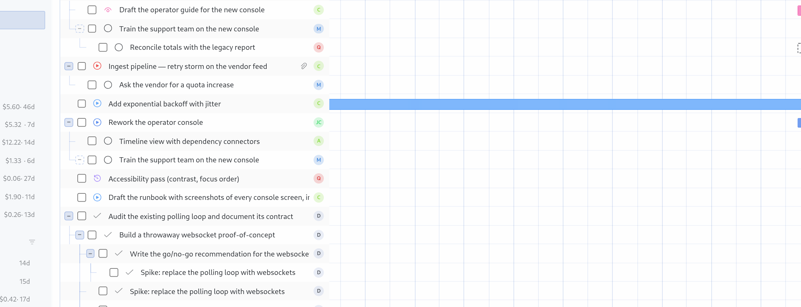

<template id="s3-template">
  <div data-composition-id="s3" data-width="1920" data-height="1080">
    <div class="frame">
      <div class="head">
        <span class="label">The timeline</span>
        <h2>Every bar is real work.</h2>
      </div>
      
      <div class="points">
        <div class="pt"><b>01</b> Bars come from the board</div>
        <div class="pt"><b>02</b> The tree keeps the lineage</div>
        <div class="pt"><b>03</b> A blocked day stays red</div>
      </div>
    </div>
    <style>
      [data-composition-id="s3"] { width: 100%; height: 100%; background: #efe9dc; color: #16130f; }
      [data-composition-id="s3"] .frame { width: 100%; height: 100%; padding: 72px 96px 60px; display: flex; flex-direction: column; }
      [data-composition-id="s3"] .head { display: flex; align-items: baseline; gap: 36px; }
      [data-composition-id="s3"] .label { font-family: "JetBrains Mono", monospace; font-size: 21px; letter-spacing: 0.18em; text-transform: uppercase; color: #1f2be0; }
      [data-composition-id="s3"] h2 { font-family: "Playfair Display", Georgia, serif; font-weight: 900; font-size: 68px; line-height: 1; letter-spacing: -0.03em; }
      [data-composition-id="s3"] .shot { margin-top: 30px; width: 1728px; height: auto; display: block; border: 1px solid rgba(22,19,15,0.25); }
      [data-composition-id="s3"] .points { margin-top: auto; margin-bottom: 0; display: flex; gap: 44px; padding-top: 24px; border-top: 2px solid #16130f; }
      [data-composition-id="s3"] .pt { font-family: "Archivo", Helvetica, sans-serif; font-size: 24px; color: rgba(22,19,15,0.9); }
      [data-composition-id="s3"] .pt b { font-family: "JetBrains Mono", monospace; font-size: 18px; color: #1f2be0; margin-right: 10px; }
    </style>
    <script>
      (function () {
        const tl = gsap.timeline({ paused: true });
        const q = (sel) => '[data-composition-id="s3"] ' + sel;
        tl.from(q(".label"), { autoAlpha: 0, x: -18, duration: 0.4, ease: "power2.out" }, 0.1);
        tl.from(q("h2"), { autoAlpha: 0, y: 34, duration: 0.65, ease: "power3.out" }, 0.2);
        tl.from(q(".shot"), { autoAlpha: 0, y: 26, duration: 0.6, ease: "power2.out" }, 0.45);
        tl.from(q(".points"), { autoAlpha: 0, y: 16, duration: 0.5, ease: "power2.out" }, 1.1);
        tl.from(q(".pt"), { autoAlpha: 0, y: 10, duration: 0.4, stagger: 0.12, ease: "power2.out" }, 1.2);
        window.__timelines = window.__timelines || {};
        window.__timelines["s3"] = tl;
      })();
    </script>
  </div>
</template>
